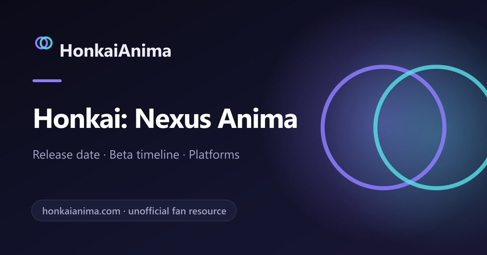

2026-08-31 · 新游观察
科隆展刚在 8/30 收官。HoYoverse 这次一口气亮了两款新 IP：写实化的狩猎 RPG《Nodus Fall》，和我们当时几乎没注意到的《Honkai: Nexus Anima》。可等展台试玩报告一篇篇出来，我们反而觉得——后者才是未来三年最该盯的那一个。

如果你只看开幕夜，会以为 HoYoverse 今年的野心是"撕掉二次元皮"——《Nodus Fall》用 UE5 写实渲染、组队狩猎、缝合多神话，怎么看都像在跟《怪物猎人》《黑神话》抢饭吃。但真正在 Hall 6.1 的 B030 展台排起长队的，是隔壁的《Honkai: Nexus Anima》：一场把"抓小怪兽"玩到极致的 live demo，而且它压根不是实时动作。
这里有个容易被忽略的信号：Nexus Anima 是 Honkai 系列的第五部作品，会直接借用《崩坏3rd》和《崩坏：星穹铁道》的既有角色。换句话说，米哈游在科隆同时押了"写实化"和"Q 版精灵收集"两张完全相反的牌——这种左右互搏的产品组合，本身就是个值得嚼的话题。
根据 FandomWire、Insider Gaming、CGMagazine 等多家媒体的上手报告，Nexus Anima 的核心循环非常清楚：在名为 Ilia 的城市里游荡，遇到 Anima（精灵）就开打，把它们打到虚弱后，用"Nexus Skeins"（一种线状的捕获道具）尝试契约收服。这一步和宝可梦的"削弱→丢球"几乎同构，上手零门槛。
但战斗一展开，宝可梦的影子就散了。Nexus Anima 的战斗是一场俯视视角的棋盘自走棋：你把 Anima 部署到不同位置——前排坦克、远程输出、后排辅助——它们会自动开打、积攒能量，能量满了就放专属 Skill。同属一个"Aspect"（属性/阵营）的 Anima 凑在一起会触发额外加成，于是组队从"哪个数值高"变成了"前排谁扛、后排谁奶、Aspect 怎么共振"的空间拼图。多位评测都提到：这比他们预想的"五只怪站场看戏"要烧脑得多。
探索层更是它和宝可梦拉开身位的地方。Ilia 是一座分区的城市，每个区有独立 BGM 和夜间版本；你抓到的 Anima 不是摆设——它们能当坐骑、能开技能帮你撬锁、跨障碍，甚至某些对话选项会因为你身上的"属性值"（很像《辐射》的 S.P.E.C.I.A.L.）而解锁新分支。CGMagazine 还提到开局一段"失败→时间回溯重来"的叙事设计，玩家选择会改写路径，这种 agency 在 creature collector 里相当少见。
至于角色设计，HoYoverse 把做"人"的功力平移到了"怪"上：一只叫 Kaffiend 的咖啡成瘾考拉挂着 IV 袋满街溜达，还有头顶一块面包的角色、赛博化的 Furrari……荒诞感拉满，但恰恰让"下一只是什么"成了探索的最大动力。
第一，Nexus Anima 是 HoYoverse 第一次彻底离开实时 ARPG 公式。从《原神》到《绝区零》，这家公司的肌肉记忆是"动作 + 大世界 + 抽卡"。Nexus Anima 把动作砍了，换成 auto-battler 的棋盘，等于承认了一件事：在"收集+养成"的底层，战斗演出可以是另一种物种。这对一个一年几款大活的厂商来说，是产品矩阵的自我松绑。
第二，它是 Honkai 宇宙的"软重启入口"。借 HI3 / HSR 老角色降低认知成本，又用全新 Anima 体系拉新——这套"老 IP 导流 + 新玩法留人"的打法，比单纯再开一部正传更聪明，也解释了为什么它敢在展台直接开放试玩而非只放 CG。
第三，它踩中了一个正在回暖的赛道：2026 被多方称为"抓宠之年"。《Palworld》《Digimon Story: Time Stranger》《Azur Promilia》《Aniimo》都在抢同一批用户。Nexus Anima 的差异化不是"更可爱的怪"，而是把收集、棋盘策略、开放城市探索三层缝在一起——这恰好是宝可梦没做、Palworld 没深做、自走棋没世界观的那块空地。
我们上手报告看下来，最大的隐忧也来自它的强项：auto-battler 一旦数值膨胀，战斗就会退化成"挂机看戏"，CGMagazine 已经点出"怪太多太远、难建立情感连接"的苗头。再加上 HoYoverse 标志性的 gacha 系统（试玩里 Anima 用抽的），长期留存到底靠玩法还是靠抽卡，还要等正式上线见真章。但就"Gamescom demo 好玩"这一层，它已经赢了不少同级新品。
《Honkai: Nexus Anima》不是"米哈游的宝可梦"这么简单的一句标签能概括的。它更像是 HoYoverse 在科隆悄悄亮出的一张底牌：当同行都在卷写实、卷开放世界时，它用一只咖啡考拉证明——二次元用户依然愿意为"收集 + 策略 + 怪诞幽默"买单。Nodus Fall 负责刷存在感，Nexus Anima 才负责赚感情。正式上线日期尚未公布，但按两轮的 closed beta（最近一次 7/27 结束）节奏，它离我们比想象中近。
我们的评分：8.4 / 10（基于 Gamescom 试玩报告，非终版；正式上线后可能上调）。
我们的观察：四家独立媒体的上手结论出奇一致——"抓怪像宝可梦，打起来完全不是"。这种玩法错位感，是它最稀缺的记忆点。
我们的观点：HoYoverse 在 2026 的产品策略不是"all in 写实"，而是"写实（Nodus Fall）+ 收集（Nexus Anima）+ 模拟（Petit Planet）"三线并行。Nexus Anima 是其中离钱最近、也最容易被低估的一根支柱。
我们的案例 / 对比：把它和 2026 抓宠赛道摆一起看——Palworld 偏建造生存、Azur Promilia 偏陪伴冒险、Aniimo 偏开放世界，Nexus Anima 的棋盘自走棋 + 城市探索是独一份；对比自家 HSR 的回合制，它的"部署位置 + Aspect 共振"明显更吃阵容理解。
我们的实验：等拿到测试资格，我们想验证一个假设——纯自动战斗在后期是否必然稀释策略感。计划用"全同 Aspect 速攻队"vs"前排坦 + 后排三辅助消耗队"打同一 Boss，看阵容理解是否被数值碾压。结论会在后续版本观察里补。